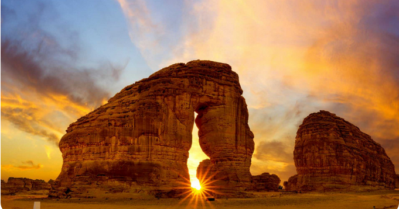

An Introduction to Al Ula
Al Ula, located in the Madinah region of northwest Saudi Arabia, is one of the most amazing cities in the Middle Eastern region. The Al Ula area is truly a testament to human endevour and natural beauty, with ancient historic cultural sites, gorgeous oasis valleys, and sandstone mountains. As a testament to its historical and cultural significance, the World Heritage Centre declared Al Ula a UNESCO World Heritage Site in 2008—the first in Saudi Arabia.
The History of Al Ula
Al Ula's history dates back to the 6th century BCE when the walled city was first founded.
It was considered ideal for a new township because of its perfect oasis location in the
valley desert, making it one of the few areas with fertile land and ample water supply.
Al Ula was built along what was then referred to as the "Incense Road," which was
essentially a trade network for spices and silk throughout the Arabian Peninsula, Egypt,
and the Indian subcontinent.
The area was once the site of the historic city of Dedan, but the Lihyan North Arabian
kingdom built the city as we know it and presided over it for the next 400 years. In 100 BCE,
the Nabateans took control of the region and made Hegra 22km north of Al Ula, the region's
center. The region's center would also shift to Al-Mabiyat, 20 km from Al-Ula, and would stay
that way until 1230 CE. After the 13th century, builders used the old stones from the Dadanite
and Lihyanite ruins again. Al-Ula proper once again became the main center of trade and
civilization in the area up to the 20th and 21st centuries.
From the 19th century onwards, western travelers began to traverse the region.
Charles Doughty was the first to write about the area in 1876, and French priests
Antonin Jaussen and Raphael Savignac visited the site in the early 20th century.
They collected many inscriptions and artifacts from the remains in Hegra and Dedan,
and their work to this day forms the basis for research into the area.
In the early 20th century, during the age of the Ottoman empire, the Hejaz railway was
constructed to link Damascus, in modern-day Syria, to Medina on the Arabian Peninsula.
The railway had stations in both Hegra and Al Ula and still exists to this day.
Over the course of the 20th century, development in the area continued,
and the local people established the new town center. As a result, people gradually
abandoned the old town area. The last family probably left in 1983, and in 1985,
congregants held the final prayer at the old mosque. However, both the medieval town
ruins and the former Liyhanite ruins are still within the boundaries of contemporary Al Ula.
What is Al-Ula like today?
Al Ula is one of the newest tourist development projects in Saudi Arabia. In April 2021,
Crown Prince Mohammad Bin Salman announced a sweeping development plan known as the
"Journey through Time Masterplan." This has led to the expansion of Al Ula's airport
and ultimately hopes to bring in more than two million tourists a year and create 38,000
new jobs. This Masterplan seeks to support the local communities while also applying a
sustainable, "light touch" approach to tourism to protect the fragile archaeological
treasures and the desert ecosystem.
Crown Prince Mohammad Bin Salman has even begun a Royal Commission for Al-Ula,
marketing the city as "the world's largest living museum, where contemporary art
coexists with ancient heritage." Al-Ula is home to many different sites that
will become exciting tourist destinations in the coming years. Here are some
of the other tours and experiences Al-Ula has to offer!
Hegra
Hegra is an fascinating place for visitors to experience and explore the location
of Saudi Arabia's first Unesco Heritage Site. Here in Hegra, you are be able to
see more than 110 preserved tombs situated in a picturesque desert landscape.
Through the local tour with knowledgeable guides, you can learn about the history
of the former inhabitants of the city and reflect over their eventual fate.
People have inhabited Hegra since the first millennium BCE, but the site was the location of
Nabatean trade from 100 BCE till 1 CE. Hegra's golden era was likely during this time of
Nabatean trade.
Along with the famous tombs where the former Nabatean royalty now lies buried,
visitors can also find historic wells and stone water channels. These feats of engineering
continue to exist as a testament to the expert craftsmanship of the ancient inhabitants,
although they did not heed the guidance that came to them through their Messenger.
A Roman presence is also rather apparent, with Roman architecture still visible on the
defensive walls and towers that once guarded the city against marauding invaders.
The Tomb of Liyhan
A striking and awe-inspiring structure to rival the tombs at Petra, the Tomb of Liyhan rises nearly 72 feet into the air. Long-ago Nabatean artisans carved one entire face of a sandstone monolith for Liyhan, son of Kuza. Also known as Qasr al-Farid, meaning "the lonely castle," this tomb stands apart from the others. Upon close inspection, visitors can see that artisans abandoned work before completion, as the lower portion is rough and unfinished.
The City of Dadan
The city of Dadan is one of the most notable areas of Al-Ula and was the former site of
both the Dadan and Lihyan kingdom capitals. Ancient architects constructed Dadan
with stone along the valley's fruitful oasis, and structures date as far back as the
late ninth century BCE during the Kingdom of Dadan.
The key site all tourists should plan to see in Dadan is the site containing more than
twelve tombs. Crafters carved into the faces of red-colored cliffs towards the city's
east end to create the breathtaking tombs. If viewed from a distance, the tombs resemble
small dark rectangles. However, on closer inspection, the intricate burial grounds crafted
thousands of years ago become apparent. Some of these funeral monuments have small lion
sculptures, marking the historically significant lion tombs. At the time, lions represented
power and protection, so artisans carved them over societal elites and royalty burials.
Considering these tombs are roughly 50 meters above ground level, it is truly incredible
how they could carve them out without any of the modern construction tools we have today.
However, the exploration at this site does not stop just there. There are many exciting
remnants of former defense structures and evidence of former agricultural systems to
explore. Several inscriptions describe agricultural designations such as seasons, types
of produce, water, and land divisions. These inscriptions are a fascinating insight into
the daily lives of the former inhabitants and tell us a lot about the religious and social
lives of everyday people and the Dadanite system of government.
Numerous discoveries of sculptural artifacts across Dadan imply some sculpture schools'
existence at some point in the past. There are also many life-sized statues as much as
2.7 meters in height. They all deonstrate strong, well-built men with chiseled features.
These are a fascinating sight, but no one is quite sure what—or whom—they depict. However,
most historians believe them to be representations of Dadan's former elite.
Jabal Ikmah
Jabal Ikmah is one of the most notable areas of the Al Ula valley and contains so many
remarkable inscriptions in Aramaic, Dadanitic, Thamudic, Minaic, and Nabataean languages,
indicating the diverse set of kingdoms that all left their mark in the area.
However, the city is perhaps most significant because the inscriptions show many signs
of pre-Arabic scripture, making it a critical sight for Arabic linguistic experts. Just
north of Al-Ula at the Al'Aqra valley, there are over 450 old Arabic inscriptions. Jabal
Ikmah, as such, is believed to be the world's most extensive open library and is a crucial
site in the linguistic development of the Arabic language as we know it today.
As outlined above, Al Ula was believed to be a center of influence for many civilizations,
and Jabal Ikmah is one of the key signifiers of that. Along with the world-famous
inscriptions, tourists can view some of the striking rock art depicting people, musical
instruments, and animals.
Ekma, The Open Air Library
From Al Ula, far into the distance, visitors can catch a glimpse of Ekma. It is worth getting closer for a look. Carved into the rock is an incredible historical 'document' that includes inscriptions dating back to the Liyhanite kingdom. Since Saudi Arabia has only been open to direct tourism for a short time, visitors to Ekma Mountain are among the very few to witness the intricately carved inscriptions in the red rock.
Al-Ula Old Town
Contemporary Al-Ula encompasses one of the most globally remarkable heritage sites,
Al-Ula Old Town. Unlike some of the other sites here, people actively lived there until
the 1980s. It is one of the narrowest parts of the Al-Ula valley and is home to the
famous Musa Bin Nusayr Citadel, built in the 10th century CE.
This site is vital to history lovers because it was the main settlement for those
looking to travel from Damascus (now in contemporary Syria) to Makkah. The city was a
replacement for Qurh, which was the previous center for travel.
The housing system in Al-Ula was unique, with all of the homes interconnecting with
one another. Many historians believe this was a defense mechanism against potential
invaders. Visitors will see 900 mudbrick houses, 400 former shops, and five town
squares of "rahbas." While walking through the town, tourists may also notice the Masjid
Al-Izam, the restored Jumma mosque that some believe Prophet Muhammad (Peace & Blessings
of God Be Upon Him) himself once visited.

if you want more information please click here
click here to view places
 0545651507
0545651507 info@explorksa.com
info@explorksa.com